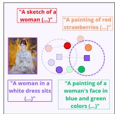

Figureure 2 · : (left) Image-to-Text and (right) Text-to-Image Recall@1 performance Figure 2: (left) Image-to-Text and (right) Text-to-Image Recall@1 performance of various CL methods evaluated on the COCO and NoCaps datasets. DAR consistently outperforms alternative approaches on the held-out datasets throughout continual training on the task suite from Table 2, which highlights the efficacy of knowledge-sharing mechanisms in our method.这张图/表用于判断 Beyond Classification 的实验收益来自哪里。重点看替换、消融或跨模型设置下趋势是否一致，而不是只看单个最高分。

Continual retrieval (task t+1) Figure 1: Conceptual difference between classification and Continual retrieval (task t+1) Figure 1: Conceptual difference between classification and retrieval in CL scenario. In classification, small perturbations may not affect the result as long as the sample remains within the class boundaries. In retrieval, even small perturbations can alter nearest neighbours and substantially affect retrieval rankings. We argue that continual retrieval requires dedicated evaluation protocols and methods, and introduce a new retrieval-focused benchmark and a novel, state-of-the-art method.这张图来自论文 PDF 的结构化抽取。当前用于辅助理解 Beyond Classification 的方法或实验，请结合正文精读段落一起看。